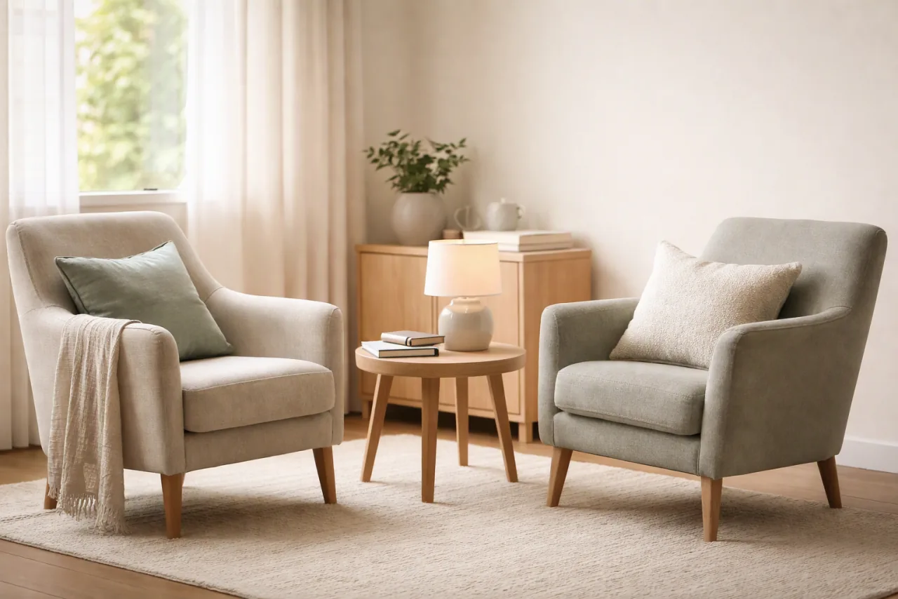

Máte pocit, že ste neustále pod tlakom.
Aj keď máte chvíľu voľna, hlava stále pracuje.
Psychologické poradenstvo · Bratislava a online
Individuálne psychologické konzultácie pre dospelých, ktorí prechádzajú náročným obdobím, cítia dlhodobý stres alebo chcú lepšie porozumieť sebe a svojim vzťahom.
Možno sa v tom spoznávate
Niekedy jednoducho cítime, že spôsob, akým veci zvládame doteraz, už nestačí.
Aj keď máte chvíľu voľna, hlava stále pracuje.
Premýšľanie, obavy alebo napätie sa vracajú častejšie, než by ste chceli.
A nie je jednoduché pochopiť, prečo.
Rozchod, strata, nové obdobie alebo rozhodnutie, pri ktorom potrebujete oporu.
S čím pomáham
Keď vám obavy, napätie alebo premýšľanie sťažujú každodenné fungovanie.
Keď máte pocit, že povinností pribúda, ale energie čoraz viac ubúda.
Keď ste na seba príliš prísni alebo pochybujete o vlastnej hodnote.
Keď sa vo vzťahoch opakujú situácie, ktorým chcete lepšie porozumieť.
Keď stojíte pred zmenou, stratou alebo rozhodnutím, ktoré nie je jednoduché.
Keď navonok môže byť všetko v poriadku, ale vy cítite, že niečo chýba.
O mne
Som psychologička a psychoterapeutka. Vo svojej práci vytváram priestor, kde nemusíte nič dokazovať ani mať pripravené správne odpovede.
Spoločne sa môžeme pozrieť na to, čo sa vo vašom živote opakuje, čo vám berie energiu a čo by ste potrebovali zmeniť.
Mgr. Lucia Nováková
Psychologička a psychoterapeutka
Vzdelanie a odborné zázemie sú v tomto dizajnovom demu uvedené ilustračne.
Ako to prebieha
Vyberiete si termín alebo mi pošlete správu.
Porozprávame sa o tom, čo vás privádza.
Spoločne si ujasníme, čomu sa chcete venovať.
Frekvenciu a ďalší postup nastavíme podľa vašich potrieb.
Miesto stretnutia

Cenník
60 €
Individuálna konzultácia · 50 minút
Osobne alebo online
Termín je možné zrušiť alebo presunúť podľa dohodnutých storno podmienok.
Vybrať termínOtázky a odpovede
Nie. Prvé stretnutie slúži aj na to, aby sme sa spoločne zorientovali v tom, čo aktuálne prežívate.
Frekvenciu dohodneme podľa vašej situácie, možností a toho, čo vám dáva zmysel.
V pokojnom rozhovore sa budeme venovať tomu, čo vás privádza, a čo by ste od konzultácie potrebovali.
Áno. Online konzultácia môže prebehnúť z miesta, kde sa cítite nerušene a máte stabilné pripojenie.
Stačí sa ozvať čo najskôr. Konkrétny postup si dohodneme pri objednaní.
O tom, ako pristupujem k súkromiu a dôvernosti rozhovorov, sa spolu porozprávame už na prvom stretnutí.
Kontakt
Prvým krokom môže byť jednoducho jedno stretnutie.